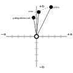
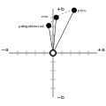

1. 序論
~INFORMATIVE［ ~web開発者／設計~tool／設計~system開発者 ］は、［ 自身の~componentにおける色~関係の設計 ］の大規模適用を支援するために，色~関数を利用することが多い。 ~UIにおける `暗い~mode^i （ `Dark-Mode^en ）能力の様な，複数の［ ~platform／利用者~選好 ］を~supportする設計~systemの利用度が増えてきている下では、これは［ 色を手動で設定する必要なく，単独の~sourceから~schemeを計算するため ］ためにも有用になる。 ◎ Web developers, design tools and design system developers often use color functions to assist in scaling the design of their component color relations. With the increasing usage of design systems that support multiple platforms and multiple user preferences, like the increased capability of Dark Mode in UI, this becomes even more useful to not need to manually set color, and to instead have a single source from which schemes are calculated.
現在では、［ ~Sass／~HSL値に対する `calc^f ／~PostCSS ］がこれを行うために利用されている。 しかしながら、前処理器は，動的に調整される色には働かないので、現在の解決策はどれも，~sRGB色域に制約され, ~HSLの知覚的な制限にも制約されている（色は色~環~内に詰め込まれているため、視覚的な明度が異なる 2 個の色の~HSL明度は， `yellow^v と `blue^v の様に同じになり得る）。 ◎ Currently Sass, calc() on HSL values, or PostCSS is used to do this. However, Preprocessors are unable to work on dynamically adjusted colors, all current solutions are restricted to the sRGB gamut and to the perceptual limitations of HSL (colors are bunched up in the color wheel, and two colors with visually different lightness, like yellow and blue, can have the same HSL lightness).
この~moduleは、次を追加する ⇒＃ `color-mix$f 関数, `color-contrast$f 関数, 色を改変する仕方 ◎ This module adds three functions: color-mix, color-contrast, and a way to modify colors.
混合するときには、知覚的に一様な `lch^v 色空間【`~LCH色空間$】が既定で利用される — それは、色域の制約が無く，色は均等に分布するので。 しかしながら，欲されるなら、`hsl^v や `srgb^v も含め，他の色空間も指定できる。 ◎ The perceptually uniform ``lch()`` colorspace is used for mixing by default, as this has no gamut restrictions and colors are evenly distributed. However, other colorspaces can be specified, including ``hsl()`` or ``srgb`` if desired.
2. 色空間
色を混合した結果, あるいは結合した結果は、利用されている`色空間$に依存して異なる。 一部の事例では、 2 つの有色な光を物理的に混合した結果が欲される（その事例では、光~強度に対し線形な，~CIE~XYZ色空間が適切になる）。 他の事例では、色は，知覚的に均等な~~分布が欲される（その事例では、知覚的に一様になるよう設計された，~CIE~Lab色空間が適切になる）。 別法として、結果が色相~環の~~周に沿うように，色度を最大~化する【~~落とさない】混合が求まれることもある（これ用には、~CIE~LCHが，きちんと働く）。 最後に，旧来の~Web内容との互換性が最も重要な考慮になることもある（そこでは、光に線形でも 知覚的に一様でもない，~sRGB色空間を選ぶことになる）。 ◎ Mixing or otherwise combining colors has different results depending on the colorspace used. In some cases, the result of physically mixing two colored lights is desired (in that case, the CIE XYZ colorspace is appropriate, because it is linear in light intensity). In other cases, colors which are evenly spaced perceptually are desired (in which case, the CIE Lab colorspace is designed to be perceptually uniform). Alternatively, maximising chroma so that color mixtures follow along the hue wheel is wanted (CIE LCH works well for this). Lastly, compatibility with legacy Web content may be the most important consideration. (the sRGB colorspace, which is neither linear-light nor perceptually uniform, is the choice here).
`colorspace@t
= `srgb^v
| `hsl^v
| `hwb^v
| `xyz^v
| `lab^v
| `lch^v
`色空間$が指定されていない場合、 `lch^v 色空間~内で混合される。 `xyz^v 色空間は、~D50白色点を伴う~CIE~XYZであり，光~強度に対し線形な空間~内での算出を許容する。 ◎ When no colorspace is specified, the mixing is done in the lch colorspace. The xyz colorspace is CIE XYZ, with a D50 whitepoint, and allows computation to be done in a linear-light-intensity space.
3. 色の混合-法： `color-mix$f 関数
この関数は、 2 個の `color$t 指定をとり，所与の`色空間$（ `colorspace$t ）内で指定した量により混合した結果を返す。 ◎ This function takes two <color> specifications and returns the result of mixing them, in a given colorspace, by a specified amount.
【 `colorspace$t がとり得る~keywordは、~level 4 による `color$f 関数~用の 定義済み色空間 を指定する~keywordとは別個な集合を成すことに注意。 】
複数個の `color-adjuster$t （色~調整子）を指定できる。 ◎ Multiple color-adjusters can be specified.
`color-mix@f
= color-mix(`colorspace$t?, `mix-component$t#{2})
`mix-component@t
= `color$t [ `percentage$t | `color-adjuster$t+ ]?
`color-adjuster@t
= [ [ `srgb-adjuster$t
| `hsl-adjuster$t
| `hwb-adjuster$t
| `xyz-adjuster$t
| `lab-adjuster$t
| `lch-adjuster$t
] | `alpha^v ] `percentage$t?
`srgb-adjuster@t = `red^v || `green^v || `blue^v
`hsl-adjuster@t = `hue-adjuster$t || `saturation^v || `lightness^v
`hwb-adjuster@t = `hue-adjuster$t || `whiteness^v || `blackness^v
`xyz-adjuster@t = `x^v || `y^v || `z^v
`lab-adjuster@t = `lightness^v || `a^v || `b^v
`lch-adjuster@t = `lightness^v || `chroma^v || `hue-adjuster$t
`hue-adjuster@t = `hue^v [`shorter^v | `longer^v | `increasing^v | `decreasing^v | `specified^v ]?
引数【 `mix-component$t 】は、次に従って正規化される： ◎ Arguments are normalized as follows:
- 以下における可用な色~調整子とは、どの色空間にも可用な `alpha^v に加えて，所与の`色空間$用に定義される色~調整子たち（例：色空間が `srgb^v ならば、 `srgb-adjuster$t を成し得る各~keyword `red^v, `green^v, `blue^v に対応するもの）を指す。 この~algoの目的は、可用な色~調整子~すべてに対し，それぞれの百分率を決定することである。 【この段は、以下を集約する／明確化するための，この訳による補完。】
-
引数には、可用な色~調整子は与えられていない場合：
- 百分率も省略されている場合（引数は `color^t のみからなる）、百分率として `50%^v が与えられたと見做す。
- この引数には、可用な色~調整子は すべて在り，そのどれもが所与の百分率を伴うとする。
-
~EACH( 可用な色~調整子 %調整子 ) に対し：
- 引数には %調整子 は無い場合、その百分率は 0% と見做す。 ◎ Adjusters that are not present on a color default to 0% (i.e. the corresponding components are taken from the other color).
-
引数には %調整子 は在るが，百分率は伴わない場合：
- 片方の引数に限り，百分率を伴わない場合、その百分率は， 100% から［ もう片方の引数の %調整子 の百分率 ］を減算した結果と見做す。
- 両~引数とも，百分率を伴わない場合、それらの百分率は… 【未策定（下の課題）】
- 両~引数の %調整子 の百分率の総和は 100% でない場合、総和が正確に 100% になるよう，双方の百分率を同じ~~係数で拡縮する。 【総和が 0% になる場合、そのように拡縮できない（下の課題）。】 ◎ If the sum of corresponding adjusters across all colors is not 100%, percentages are scaled proportionally so that the sum is exactly 100%.
欠落している調整子は、どこでも 0% を既定にするか？ 2 個目の色に限りそうするか？ 前者の場合、調整子の総和は，簡単に 0% になり得ることになる。 ◎ Do missing adjusters default to 0% everywhere, or only in the second color? If the former, we can end up with adjusters that sum to 0% pretty easily.
調整子の意味は、`色空間$により定義される。 例えば，色空間が `hsl^v の場合の色相は、~HSL色相を意味し，~LCH色相とは同じでない。 `lch^v の場合の明度は、~Lab明度と同じ~LCH明度を意味するが，~HSL明度とは異なる。 ◎ The meaning of the adjusters is defined by colorspace. For example, if the colorspace is hsl, hue means the HSL hue, which is not the same as the LCH hue; if the colorspace is lch, lightness means the LCH Lightness, which is the same as Lab lightness, but different to the HSL Lightness.
可用になる色~調整子は、所与の色空間~用に定義されるものに限られる。 【例えば色空間 `srgb^v 用の調整子は `srgb-adjuster$t に限られる，等々。】 例えば，色空間が `hwb^v でない限り、~HWB `whiteness^v 調整子を利用するのはアリでない。 `alpha^v 調整子は、どの色空間でも可用である。 ◎ Only the color-adjusters defined for a given colorspace are available. For example, it is not possible to use the HWB whiteness adjuster unless the colorspace is hwb. The alpha adjuster is available on any colorspace.
指定した色空間の色域が，調整される色が属するそれより狭い場合、色域の対応付けが生じることになる。 ◎ If the specified colorspace has a smaller gamut than the one in which the color to be adjusted is specified, gamut mapping will occur.
注記： すべての色~調整子が等しく有用になるわけではない。 ~LCH内の調整は最も有用であり、それゆえ既定にされている。 `a^v ／ `b^v 軸に対する調整が必要になることは稀にしかない。 ~sRGBに関係する空間（ `srgb^v 自身, `hsl^v, `hwb^v ）における調整は、主に，~CSS前処理器~内で現在~行われている類の調整との後方-互換性を得るために供されている。 ［ X／Y／Z ］~channelを個別に調整した場合、色相を有意にズラす結果を生産することになる。 しかしながら，これらの~channelすべてを一緒に調整するのは有用であり、色を［ 明化-／暗化- ］することになる。 ◎ Note: not all color-adjusters are equally useful. Adjustments in LCH are the most useful, which is why it is the default. Adjustments on the a and b axes are rarely needed. Adjustments in the srgb-related spaces (srgb itself, hsl, hwb) are provided mainly for backward compatibility with the sorts of adjustments currently done in CSS preprocessors. Adjusting the individual x, y and z channels will produce significant hue shifts; however, adjusting all three channels together is useful and will lighten or darken the color.
色相~調整子（ `hue-adjuster$t ）は、 § 色相の補間 `CSS-COLOR-4$r を指定する省略可能な~keywordをとる。 どの~keywordも指定されていない場合、 `shorter^v が指定されたかのようになる。 ◎ The hue-adjuster takes optional keywords, to specify the algorithm. If no keyword is specified, it is as if shorter were specified.
この例は、 `peru^vc 40%, `lightgoldenrod^vc 60% による混合を生産する。 ◎ This example produces a mixture of 40% peru and 60% lightgoldenrod.
color-mix(peru 40%, lightgoldenrod);
混合するときは、 `lch$f 色空間にて行われる。 中立な L 軸~~方向から見た俯瞰図は： ◎ The mixing is done in lch() colorspace. Here is a top-down view, looking along the neutral L axis:
計算は、次に従う： ◎ The calculation is as follows:
- `peru^vc = `lch(62.253% 54.011 63.677)^v ◎ peru is lch(62.253% 54.011 63.677)
- `lightgoldenrod^vc = `lch(91.374% 31.415 98.821)^v ◎ lightgoldenrod is lch(91.374% 31.415 98.821)
- 混合した明度 = 62.253 ~MUL 40 ~DIV 100 ~PLUS 91.374 ~MUL (100 ~MINUS 40) ~DIV 100 = 79.7256 ◎ the mixed lightness is 62.253 * 40/100 + 91.374 * (100-40)/100 = 79.7256
- 混合した色度 = 54.011 ~MUL 40 ~DIV 100 ~PLUS 31.415 ~MUL (100 ~MINUS 40) ~DIV 100 = 40.4534 ◎ the mixed chroma is 54.011 * 40/100 + 31.415 * (100-40)/100 = 40.4534
- 混合した色相 = 63.677 ~MUL 40 ~DIV 100 ~PLUS 98.821 ~MUL (100 ~MINUS 40) ~DIV 100 = 84.7634 ◎ the mixed hue is 63.677 * 40/100 + 98.821 * (100-40)/100 = 84.7634
- 混合した結果は `87.41% 76.03% 47.64%^rgb `lch(79.7256% 40.4534 84.7634)^v ◎ the mixed result is lch(79.7256% 40.4534 84.7634)
この例は、（既定の）~LCH色空間~内で， `teal^v と `olive^v の混合を生産する — ~LCHの各~channelが `teal^v は値の 65%, `olive^v は値の 35% になるよう。 ◎ This example produces the mixture of teal and olive, in lch colorspace (the default), with each lch channel being 65% of the value for teal and 35% of the value for olive.
注記： 色相と色度に対する補間-法は、中間~色を端点~色と同じ彩度に保つ。 ◎ Note: interpolating on hue and chroma keeps the intermediate colors as saturated as the endpoint colors.
color-mix(teal 65%, olive);
計算は、次に従う： ◎ The calculation is as follows:
- ~sRGB `teal^vc （ `#008080^v ） = `lch(47.9855% 31.6903 196.4524)^v ◎ sRGB teal (#008080) is lch(47.9855% 31.6903 196.4524)
- ~sRGB `olive^vc （ `#808000^v ） = `lch(52.1496% 56.8124 99.5746)^v ◎ sRGB olive (#808000) is lch(52.1496% 56.8124 99.5746)
- 混合した明度 = 47.9855 ~MUL 0.65 ~PLUS 52.1496 ~MUL 0.35 = 49.4429 ◎ mixed lightness is 47.9855 * 0.65 + 52.1496 * 0.35 = 49.4429
- 混合した色度 = 31.6903 ~MUL 0.65 ~PLUS 56.8124 ~MUL 0.35 = 40.4830 ◎ mixed chroma is 31.6903 * 0.65 + 56.8124 * 0.35 = 40.4830
- 混合した色相 = 196.4524 ~MUL 0.65 ~PLUS 99.5746 ~MUL 0.35 = 162.5452 ◎ mixed hue is 196.4524 * 0.65 + 99.5746 * 0.35 = 162.5452
- 混合した結果は `lch(49.4429% 40.4830 162.5452)^v （青みがかった~green `rgb(7.7377% 52.5730% 37.3213%)^vc ）になる。 ◎ mixed result is lch(49.4429% 40.4830 162.5452) ◎ which is a slightly-blueish green: rgb(7.7377% 52.5730% 37.3213%)
全部ではなく一定の~channelに限り混合するときには、 `color-adjuster$t を利用できる。 結果における混合されない~channelは、`最初^emの色から複製される。 ◎ Instead of mixing all channels equally, color-adjusters can be used to only mix certain channels. The unmixed channels in the result are copied across from the first color.
この例は、（既定の）~LCH色空間~内で，~deep-greenと~sky-blueの混合を生産する — 明度が~greenの明度の 40% （したがって，~blueの明度の 60% ）になり、~greenの色度と色相が混合した結果にも そのまま利用されるよう。 ◎ This example produces the mixture of a deep green and a sky blue, in lch() colorspace (the default), with the lightness being 40% of the lightness of the green (and thus, 60% of the lightness of the blue). The chroma and hue of the green are used unchanged in the mixed result.
color-mix(rgb(0% 42.35% 33.33%) lightness 40%, rgb(41.2% 69.88% 96.64%));
計算は、次に従う： ◎ The calculation is as follows:
- ~deep-green `rgb(0% 42.35% 33.33%)^vc = `lch(40.083% 32.808 171.175)^v ◎ rgb(0% 42.35% 33.33%) is lch(40.083% 32.808 171.175)
- ~sky-blue `rgb(41.2% 69.88% 96.64%)^vc = `lch(70% 42.5 258.2)^v ◎ rgb(41.2% 69.88% 96.64%) is lch(70% 42.5 258.2)
- 混合した明度 = 40.083 ~MUL 0.4 ~PLUS 70 ~MUL (1 ~MINUS 0.4) = 58.0332 ◎ mixed lightness is 40.083 * 0.4 + 70% * (1 - 0.4) = 58.0332
- 混合した結果 = `lch(58.0332 32.808 171.175)^v （ `rgb(26.25% 60.68% 50.72%)^vc, より明るい~green）になる。 ◎ mixed result is lch(58.0332 32.808 171.175) ◎ which is a rgb(26.25% 60.68% 50.72%), a lighter green
この例は、（既定の）~LCH色空間~内で，~redと~sky-blueの混合を生産する — 短い方の色相~弧を利用する下で，結果の色相が ~redの色相の 75.23% （したがって，~blueの色相の 24.77% ）になり、~redの色度と明度が~~保たれるよう。 ◎ This example produces the mixture of a red and a sky blue, in lch() colorspace (the default), with the hue being 75.23% of that of the red (and thus, 24.77% of that of the blue). The shorter hue arc will be used. The chroma and lightness of the red are left unchanged.
color-mix(lch(52% 58.1 22.7) hue 75.23%, lch(56% 49.1 257.1));
計算は、次に従う： ◎ The calculation is as follows:
- ~red `rgb(82.02% 30.21% 35.02%)^vc = `lch(52% 58.1 22.7)^v ◎ lch(52% 58.1 22.7)
- ~sky-blue `rgb(5.64% 55.94% 85.31%)^vc = `lch(56% 49.1 257.1)^v ◎ lch(56% 49.1 257.1)
- 色相の差は `abs^op( 257.1 ~MINUS 22.7 ) = 234.4 であり， 180° より大きい。 短い方の弧は 125.6° †になる。 【！原文誤り 54.4° （ = 234.4 - 180 ）】 ◎ hue difference is |257.1 - 22.7| = 234.4, which is greater than 180; the shorter arc is 54.4 degrees.
- 混合した色相 = (22.7 ~PLUS 360) ~MUL 0.7523 ~PLUS (257.1 ~MUL 0.2477 ) = 351.59° ◎ mixed hue is (22.7 + 360) * 0.7523 +(257.1 * 0.2477 = 351.59 degrees
- 混合した結果は `80.672% 28.822% 55.255%^rgb `lch(52% 58.1 351.59)^v になる。 ◎ mixed result is lch(52% 58.1 351.59)
この例は、（既定の）~LCH色空間~内で，~redと~sky-blueの混合を生産する — 長い方の色相~弧を利用する下で，結果の色相が ~redの色相の 75.23% （したがって，~blueの色相の 24.77% ）になり、~redの色度と明度が~~保たれるよう。 ◎ This example produces the mixture of a red and a sky blue, in lch() colorspace (the default), with the hue being 75.23% of that of the red (and thus, 24.77% of that of the blue). The longer hue arc has been specified. The chroma and lightness of the red are left unchanged.
color-mix(lch(52% 58.1 22.7) hue longer 75.23%, lch(56% 49.1 257.1) );
計算は、次に従う： ◎ The calculation is as follows:
- ~red `rgb(82.02% 30.21% 35.02%)^vc = `lch(52% 58.1 22.7)^v ◎ lch(52% 58.1 22.7)
- ~sky-blue `rgb(5.64% 55.94% 85.31%)^vc = `lch(56% 49.1 257.1)^v ◎ lch(56% 49.1 257.1)
- 色相の差は `abs^op( 257.1 ~MINUS 22.7 ) = 234.4 であり， 180° より大きいが、長い方の弧が要請されている。 ◎ hue difference is |257.1 - 22.7| = 234.4, which is greater than 180, but the long arc was requested.
- 混合した色相 = 22.7 ~MUL 0.7523 ~PLUS 257.1 ~MUL 0.2477 = 80.76 ◎ mixed hue is 22.7 * 0.7523 + 257.1 * 0.2477 = 80.76
- 混合した結果は `61.11% 45.85% 0.41%^rgb `lch(52% 58.1 80.76)^v になる。 ◎ mixed result is lch(52% 58.1 80.76)
この例は、（既定の）~LCH色空間~内で，前の例と同じ 2 個の色（~redと~sky-blue）の混合を生産する — その色相が~redの色相の 75.23% （したがって，~blueの色相の 24.77% ）になり、今回は明度は 68.4% に設定され，~redの色度が~~保たれるよう。 ◎ This example produces the mixture of the same two colors as the previous example (a red and a sky blue), in lch() colorspace (the default), with the hue being 75.23% of that of the red (and thus, 24.77% of that of the blue). This time, the lightness is set to 68.4% and the chroma is left unchanged.
color-mix(rgb(82.02% 30.21% 35.02%) hue 75.23% lightness 68.4%, rgb(5.64% 55.94% 85.31%) );
計算は、次に従う： ◎ The calculation is as follows:
- ~red `rgb(82.02% 30.21% 35.02%)^vc = `lch(52% 58.1 22.7)^v ◎ rgb(82.02% 30.21% 35.02%) is lch(52% 58.1 22.7)
- ~sky-blue `rgb(5.64% 55.94% 85.31%)^vc = `lch(56% 49.1 257.1)^v ◎ rgb(5.64% 55.94% 85.31%) is lch(56% 49.1 257.1)
- 混合した色相 = 22.7 ~MUL 0.7523 ~PLUS 257.1 ~MUL 0.2477 = 80.76 ◎ mixed hue is 22.7 * 0.7523 + 257.1 * 0.2477 = 80.76
- 新たな明度は 68.4% に指定されている ◎ new lightness is specified as 68.4%
- 混合した結果は `lch(68.4% 58.1 80.76)^v （ `rgb(79.67% 62.48% 22.09%)^vc ）になる。 ◎ mixed result is lch(68.4% 58.1 80.76) which is rgb(79.67% 62.48% 22.09%)
この例は、 `xyz^v `色空間$内で，前の例と同じ 2 個の色（~redと~sky-blue）の混合を生産する — その色相が ~redの色相の 75.23% （したがって，~blueの色相の 24.77% ）になるよう。 ◎ This example produces the mixture of the same two colors as the previous examples (a red and a sky blue), in xyz colorspace, with the mixture being 75.23% of that of the red (and thus, 24.77% of that of the blue).
color-mix(xyz rgb(82.02% 30.21% 35.02%) 75.23%, rgb(5.64% 55.94% 85.31%));
計算は、次に従う： ◎ The calculation is as follows:
- ~red `rgb(82.02% 30.21% 35.02%)^vc = `lch(52% 58.1 22.7)^v は、 X=0.3214, Y=0.2014, Z=0.0879 ◎ rgb(82.02% 30.21% 35.02%) is lch(52% 58.1 22.7) which is X=0.3214, Y=0.2014, Z=0.0879.
- ~sky-blue `rgb(5.64% 55.94% 85.31%)^vc = `lch(56% 49.1 257.1)^v は、 X=0.2070, Y=0.2391, Z=0.5249. ◎ rgb(5.64% 55.94% 85.31%) is lch(56% 49.1 257.1) which is X=0.2070, Y=0.2391, Z=0.5249.
- 混合した結果の X = (0.3214 ~MUL 0.7523) ~PLUS (0.2070 ~MUL (1 ~MINUS 0.7523)) = 0.29306 ◎ mixed result X=(0.3214 * 0.7523) + (0.2070 * (1 - 0.7523)) = 0.29306.
- 混合した結果の Y = (0.2014 ~MUL 0.7523) ~PLUS (0.2391 ~MUL (1 ~MINUS 0.7523)) = 0.21074 ◎ mixed result Y=(0.2014 * 0.7523) + (0.2391 * (1 - 0.7523)) = 0.21074.
- 混合した結果の Z = (0.0879 ~MUL 0.7523) ~PLUS (0.5249 ~MUL (1 ~MINUS 0.7523)) = 0.19614 ◎ mixed result Z=(0.0879 * 0.7523) + (0.5249 * (1 - 0.7523)) = 0.19614.
- 混合した結果は `lch(53.0304% 38.9346, 352.8138)^v （ `rgb(72.300% 38.639% 53.557%)^vc ）になる。 ◎ mix result is lch(53.0304% 38.9346, 352.8138) which is rgb(72.300% 38.639% 53.557%)
この例は、（既定の）~LCH色空間~内で， `red^v と `yellow^v の混合を生産する — その明度が `red^v の明度の 30% （したがって, `yellow^v の明度の 70% ）になり、 `red^v の色度と色相が~~保たれるよう。 ◎ This example produces the mixture of red and yellow, in lch() colorspace (the default), with the lightness being 30% of the lightness of red (and thus, 70% of the lightness of yellow). The chroma and hue of red are left unchanged.
color-mix(red lightness 30%, yellow);
計算は、次に従う： ◎ The calculation is as follows:
- ~sRGB `red^vc （ `#F00^v ） = `lch(54.2917% 106.8390 40.8526)^v ◎ sRGB red (#F00) is lch(54.2917% 106.8390 40.8526)
- ~sRGB `yellow^vc（ `#FF0^v ） = `lch(97.6071% 94.7077 99.5746)^v ◎ sRGB yellow (#FF0) is lch(97.6071% 94.7077 99.5746)
- 混合した明度 = 54.2917 ~MUL 0.3 ~PLUS 97.6071 ~MUL 0.7 = 84.6125 ◎ mixed lightness is 54.2917 * 0.3 + 97.6071 * 0.7 = 84.6125
- 混合した結果は `lch(84.6125% 106.8390 40.8526)^v になり、とても明るい高~彩度な~redになる ⇒＃ ~sRGB色域からは かなり外れる： `rgb(140.4967% 51.2654% 32.6891%)^v ／ ~P3色域からも外れる： `color(display-p3 1.3033 0.5756 0.4003)^v ◎ mixed result is lch(84.6125% 106.8390 40.8526) ◎ which is a very light, saturated red • (and well outside the gamut of sRGB: rgb(140.4967% 51.2654% 32.6891%)) • even outside the gamut of P3: color(display-p3 1.3033 0.5756 0.4003)
この例は、混合できても，現在の機器で表示できない色があることをデモる。 ◎ This example demonstrates that not all colors which can be mixed, can be displayed on current devices.
この例は、`~Lab色空間$内で，前の例と同じ 2 個の色（~redと~sky-blue）の混合を生産する — `a^, `b^ とも 1 個目の色の 38% になり、~redの明度が~~保たれるよう。 ◎ This example produces the mixture of the same two colors as the previous example (a red and a sky blue), in Lab colorspace, with 38% of a and 38% of b. The lightness of the red is left unchanged.
これは、~LCH補間よりも低~彩度な結果を示す — 補間は `a^, `b^ 平面~上の直線~内で行われ、より L 軸~近くを通るので。 ◎ This shows a desaturated result, compared to LCH interpolation, because interpolation is in a stright line on the a,b plane and can thus pass close to the central, neutral axis.
color-mix(lab rgb(82.02% 30.21% 35.02%) a 38% b 38%, rgb(5.64% 55.94% 85.31%));
計算は、次に従う： ◎ The calculation is as follows:
- ~red `rgb(82.02% 30.21% 35.02%)^vc = `lab(52% 53.599 22.421)^v ◎ rgb(82.02% 30.21% 35.02%) is lab(52% 53.599 22.421)
- ~sky-blue `rgb(5.64% 55.94% 85.31%)^vc = `lab(56% -10.962 -47.861)^v ◎ rgb(5.64% 55.94% 85.31%) is lab(56% -10.962 -47.861)
- `a^ = ( 53.599 ~MUL 0.38 ) ~PLUS ( −10.962 ~MUL 0.62 ) = 13.572 ◎ a is (53.599 * 0.38) + (-10.962 * 0.62) = 13.572
- `b^ = ( 22.421 ~MUL 0.38 ) ~PLUS ( −47.861 ~MUL 0.62 ) = −21.154 ◎ b is (22.421 * 0.38) + (-47.861 * 0.62) = -21.154
- 結果は `lab(52% 13.572 -21.154)^v （ `rgb(52.446% 45.821% 62.953%)^vc ）になる。 ◎ result is lab(52% 13.572 -21.154) which is rgb(52.446% 45.821% 62.953%)
`color-mix^f に 3 個以上の色を許容するか？ （ `4711$issue ） ◎ color-mix to allow more than two colors?
4. 最も~contrastが高い色の選定-法： `color-contrast^f 関数
この関数は、最初に与える色（概して，背景~色が与えられるが、そうする必要はない）, および~~後続の 1 個以上の色からなる~listをとり，~listから［ 最初に与えた色との輝度`~contrast比$が最も高くなる色 ］を選定する（例えば、 `§ ~contrast（最小）$を確保するため）。 `WCAG21$r ◎ This function takes, firstly, a single color (typically a background, but not necessarily), and then second, a list of two or more colors; it selects from that list the color with highest luminance contrast [WCAG21] to the single color.
`color-contrast@f
= color-contrast( `color$t vs `color$t# )
`color-contrast^f に~target~contrast比を追加するか？ （ `4749$issue ） ◎ add target contrast ratio to color-contrast?
color-contrast(wheat vs tan, sienna, var(--myAccent), #d2691e)
計算は、次に従う： ◎ The calculation is as follows:
- 最初に与えた色 `wheat^vc （ `#f5deb3^v ）の`相対~輝度$は 0.749 である。 ◎ wheat (#f5deb3), the background, has relative luminance 0.749
- `tan^vc （ `#d2b48c^v ）の相対~輝度は 0.482 なので、~contrast比は `1.501^cr になる。 ◎ tan (#d2b48c) has relative luminance 0.482 and contrast ratio 1.501
- `sienna^vc （ `#a0522d^v ）の相対~輝度は 0.137 なので、~contrast比は `4.273^cr になる。 ◎ sienna (#a0522d) has relative luminance 0.137 and contrast ratio 4.273
- ここでの `--myAccent^p の値は `#b22222^vc とする — その相対~輝度は 0.107 なので、~contrast比は `5.081^cr になる。 ◎ Suppose myAccent has the value #b22222: ◎ #b22222 has relative luminance 0.107 and contrast ratio 5.081
- `#d2691e^vc の相対~輝度は 0.305 なので、~contrast比は `2.249^cr になる。 ◎ #d2691e has relative luminance 0.305 and contrast ratio 2.249
最も高い~contrast比は `5.081^cr なので、 `var(--myAccent)^v が選定される。 ◎ The highest contrast ratio is 5.081 so var(--myAccent) wins
~list内に（~keyword `vs^v より後に）~contrast比が等しいものが複数ある場合、最初のものが優先される。 ◎ The colors in the list (after the keyword vs) are tested sequentially, from left to right; a color is the temporary winner if it has the highest contrast of all those tested so far, and once the end of the list is reached, the current temporary winner is the overall winner. Thus, if two colors in the list happen to have the same contrast, the earlier in the list wins because the later one has the same contrast, not higher.
foo {
--bg: hsl(200 50% 80%);
--purple-in-hsl: hsl(300 100% 25%);
color: color-contrast(var(--bg) vs hsl(200 83% 23%), purple, var(--purple-in-hsl));
}
計算は、次に従う： ◎ The calculation is as follows:
- `--bg^p の値 `hsl(200 50% 80%)^vc （ `rgb(179 213 230)^v ）の`相対~輝度$は 0.628835 である。 ◎ --bg is rgb(179 213 230) which has relative luminance 0.628835
- `hsl(200 83% 23%)^vc （ `rgb(10 75 107)^v ）の相対~輝度は 0.061575 なので、~contrast比は `6.08409^cr になる。 ◎ hsl(200 83% 23%) is rgb(10 75 107) which has relative luminance 0.061575 and contrast ratio 6.08409
- `purple^vc （ `rgb(128 0 128)^v ）の相対~輝度は 0.061487 なので、~contrast比は `6.08889^cr になる。 ◎ purple is rgb(128 0 128) which has relative luminance 0.061487 and contrast ratio 6.08889
- `--purple-in-hsl^p の値 `hsl(300 100% 25%)^vc （ `rgb(128 0 128)^vc ）の相対~輝度は 0.061487 なので、~contrast比は `6.08889^cr になる。 これは， `purple^v に対する~contrastより大きくないので、 `purple^v が優先される。 ◎ --purple-in-hsl is also rgb(128 0 128) which has relative luminance 0.061487 and contrast ratio 6.08889. This is not greater than the contrast for purple, so purple wins.
【！are shown to six significant figures？】 この例は、［ 計算に先立って低-精度に丸めると，間違った結果を与える ］ことをデモる（ `0.061575^cr は `0.061487^cr に, `6.08409^cr は `6.08889^cr にとても近い）。 ◎ The calculated values here are shown to six significant figures, to demonstrate that early rounding to a lower precision would have given the wrong result (0.061575 is very close to 0.061487; 6.08409 is very close to 6.08889).
5. 色の改変-法
注記： 色を改変するための提案として、現時点では次の 2 つがある ⇒＃ `color-adjust$f ／ 相対~色の構文 ◎ Note: There are currently two proposals for modifying colors: color-adjust and Relative color syntax.
色の改変~用に 2 つの提案がある（ 提案 1, 提案 2 ）。 ~CSS~WGは、最終的な解決策が一本化されるよう，それぞれの最良な側面が選ばれるものと期待している（ `3187$issue ）。 ◎ there are two proposals for color modification (proposal 1, proposal 2). The CSS WG expects that the best aspects of each will be chosen to produce a single eventual solution. <https://github.com/w3c/csswg-drafts/issues/3187>
5.1. 色の調整-法： `color-adjust^f 関数
この関数は、 1 個の `color$t 指定をとり，その色を — 所与の`色空間$内で，指定した `color-adjuster^v により — 調整した結果を返す。 ◎ This function takes one <color> specification and returns the result of adjusting that color, in a given colorspace, by a specified color-adjuster.
他が指定されない限り，この調整は `lch^v 色空間【`~LCH色空間$】内で行われる。 ◎ Unless otherwise specified, the adjustment is done in the lch colorspace.
複数個【？】の色~関数を指定できる。 ◎ Multiple color functions can be specified.
`color-adjust@f
= color-adjust( `color$t [ color-adjuster `colorspace$t? ]? )
【 `color-adjuster^v は、 `color-adjuster$t 意図していると見受けられるが，それに似た何らかの構文かもしれない。 】
この例は、（既定の）~LCH色空間~内で， `peru^v （ `#CD853F^v ）の調整を生産する — 明度を【明度 100% の】 20% まで抑制し，【！~redの】その色度と色相が~~保たれるよう。 ◎ This example produces the adjustment of peru (#CD853F), in lch() colorspace (the default), with the lightness being reduced by 20%. The chroma and hue of red are left unchanged.
color-adjust(peru lightness -20%);
計算は、次に従う： ◎ The calculation is as follows:
- `peru^vc（ `#CD853F^v ） = `lch(62.2532% 54.0114 63.6769)^v ◎ peru (#CD853F) is lch(62.2532% 54.0114 63.6769)
- 調整-済み明度 = 62.2532% ~MINUS 20% = 42.2532% ◎ adjusted lightness is 62.2532% - 20% = 42.2532%
- 調整-済み結果は `lch( 42.2532% 54.0114 63.6769 )^v （ `rgb(57.58% 32.47% 3.82%)^vc ）になる ◎ adjusted result is lch(42.2532% 54.0114 63.6769) ◎ which is rgb(57.58% 32.47% 3.82%)
5.2. 相対~色の構文
絶対~座標を指定する他にも，すべての色~関数は、`相対~構文^emを利用することにより，既存の色 — 以下では “起点~色” と称される — に基づく色を関数の~target`色空間$~内に生産できる。 この構文は、 ~keyword `from^v と【その直後の，起点~色を与える】 `color$t 値に加え，省略可能な［ 色~関数に特有な数量的な座標 ］からなる。 元の色の座標の計算を許容するため、［ 各~座標~用に，一文字の~keywordがいくつか ］, および［ 色の~alphaに対応する `alpha^v ~keyword ］がある。 座標が指定されていない場合、関数は単に起点~色を~target関数の`色空間$へ変換する。 ◎ Besides specifying absolute coordinates, all color functions can also be used with a *relative syntax* to produce colors in the function’s target colorspace, based on an existing color (henceforth referred to as "origin color"). This syntax consists of the keyword from, a <color> value, and optionally numerical coordinates specific to the color function. To allow calculations on the original color’s coordinates, there are single-letter keywords for each coordinate and `alpha` that corresponds to the color’s alpha. If no coordinates are specified, the function merely converts the origin color to the target function’s colorspace.
以下の各~節に、各~色~関数用の相対~色~構文を要旨する。 ◎ The following sections outline the relative color syntax for each color function.
この仕様の将来~versionは、 `color$f 用の相対~構文も定義し得る。 ◎ A future version of this specification may define a relative syntax for color() as well.
5.2.1. 相対~RGB色
`rgb$f 関数の文法は、次のように拡張される： ◎ The grammar of the rgb() function is extended as follows:
`rgb@f
= rgb([from `color$t]? `percentage$t{3} [ / `alpha-value$t ]? )
| rgb([from `color$t]? `number$t{3} [ / `alpha-value$t ]? )
`alpha-value@t
= `number$t
| `percentage$t
起点~色が在るときは、次に挙げる~keywordもこの関数に利用できる（対応する値が~parameterに期待される型に適合する限り）： ◎ When an origin color is present, the following keywords can also be used in this function (provided the end result conforms to the expected type for the parameter) and correspond to:
- `r^v ： ~sRGBへの変換~後における，起点~色の~red~channelに対応する `percentage$t を与える ◎ r is a <percentage> that corresponds to the origin color’s red channel after its conversion to sRGB
- `g^v ： ~sRGBへの変換~後における，起点~色の~green~channelに対応する `percentage$t を与える ◎ g is a <percentage> that corresponds to the origin color’s green channel after its conversion to sRGB
- `b^v ： ~sRGBへの変換~後における，起点~色の~blue~channelに対応する `percentage$t を与える ◎ b is a <percentage> that corresponds to the origin color’s blue channel after its conversion to sRGB
- `alpha^v ： 起点~色の~alpha透明度に対応する `percentage$t を与える ◎ alpha is a <percentage> that corresponds to the origin color’s alpha transparency
~sRGB色空間~内で色~channelを操作するときは： ◎ To manipulate color channels in the sRGB colorspace:
rgb(from `indianred^vc 255 g b)
これは、~sRGB値 `indianred^vc（ `rgb(205 92 92)^v ）をとり，~red~channelを 255 に置換する。 その結果は、 `rgb(255 92 92)^vc になる。 ◎ This takes the sRGB value of indianred (205 92 92) and replaces the red channel with 255 to give rgb(255 92 92).
5.2.2. 相対~HSL色
`hsl$f 関数の文法は、次のように拡張される： ◎ The grammar of the hsl() function is extended as follows:
`hsl@f
= hsl([from `color$t]? `hue$t `percentage$t `percentage$t [ / `alpha-value$t ]? )
`hue@t
= `number$t
| `angle$t
起点~色が在るときは、次に挙げる~keywordもこの関数に利用できる（対応する値が~parameterに期待される型に適合する限り）： ◎ When an origin color is present, the following keywords can also be used in this function (provided the end result conforms to the expected type for the parameter) and correspond to:
- `h^v ： ~sRGBへの変換~後における，起点~色の~HSL色相に対応する `number$t を与え，範囲 [0, 360) に正規化される。 ◎ h is a <number> that corresponds to the origin color’s HSL hue after its conversion to sRGB, normalized to a [0, 360) range.
- `s^v ： ~sRGBへの変換~後における，起点~色の~HSL彩度に対応する `percentage$t を与える ◎ s is a <percentage> that corresponds to the origin color’s HSL saturation after its conversion to sRGB
- `l^v ： ~sRGBへの変換~後における，起点~色の~HSL明度に対応する `percentage$t を与える ◎ l is a <percentage> that corresponds to the origin color’s HSL lightness after its conversion to sRGB
- `alpha^v ： 起点~色の~alpha透明度に対応する `percentage$t を与える ◎ alpha is a <percentage> that corresponds to the origin color’s alpha transparency
これは、色相~角度に 180° を加算して，補色を与える： ◎ This adds 180 degrees to the hue angle, giving a complementary color.
--accent: lightseagreen; --complement: hsl(from var(--accent) calc(h + 180) s l);
`--accent^p の値 `lightseagreen^v は `hsl(177deg 70% 41%)^vc なので、 `--complement^p は `hsl(357deg 70% 41%)^vc になる。 ◎ lightseagreen is hsl(177deg 70% 41%), so --complement is hsl(357deg 70% 41%)
5.2.3. 相対~HWB色
`hwb$f 関数の文法は、次のように拡張される： ◎ The grammar of the hwb() function is extended as follows:
`hwb@f
= hwb([from `color$t]? `hue$t `percentage$t `percentage$t [ / `alpha-value$t ]? )
起点~色が在るときは、次に挙げる~keywordもこの関数に利用できる（対応する値が~parameterに期待される型に適合する限り）： ◎ When an origin color is present, the following keywords can also be used in this function (provided the end result conforms to the expected type for the parameter) and correspond to:
- `h^v ： ~sRGBへの変換~後における，起点~色の~HWB色相に対応する `number$t を与える ◎ h is a <number> that corresponds to the origin color’s HWB hue after its conversion to sRGB
- `w^v ： ~sRGBへの変換~後における，起点~色の~HWB白度に対応する `percentage$t を与える ◎ w is a <percentage> that corresponds to the origin color’s HWB whiteness after its conversion to sRGB
- `b^v ： ~sRGBへの変換~後における，起点~色の~HWB黒度に対応する `percentage$t を与える ◎ b is a <percentage> that corresponds to the origin color’s HWB blackness after its conversion to sRGB
- `alpha^v ： 起点~色の~alpha透明度に対応する `percentage$t を与える ◎ alpha is a <percentage> that corresponds to the origin color’s alpha transparency
5.2.4. 相対~Lab色
`lab$f 関数の文法は、次のように拡張される： ◎ The grammar of the lab() function is extended as follows:
`lab@f
= lab([from `color$t]? `percentage$t `number$t `number$t [ / `alpha-value$t ]? )
起点~色が在るときは、次に挙げる~keywordもこの関数に利用できる（対応する値が~parameterに期待される型に適合する限り）： ◎ When an origin color is present, the following keywords can also be used in this function (provided the end result conforms to the expected type for the parameter) and correspond to:
- `l^v ： 起点~色の~CIE明度（ L【！Lightness】 ）に対応する `percentage$t を与える ◎ l is a <percentage> that corresponds to the origin color’s CIE Lightness
- `a^v ： 起点~色の~CIELab `a^ 軸に対応する `number$t を与える ◎ a is a <number> that corresponds to the origin color’s CIELab a axis
- `b^v ： 起点~色の~CIELab `b^ 軸に対応する `number$t を与える ◎ b is a <number> that corresponds to the origin color’s CIELab b axis
- `alpha^v ： 起点~色の~alpha透明度に対応する `percentage$t を与える ◎ alpha is a <percentage> that corresponds to the origin color’s alpha transparency
基底~色の透明度を調整する複数の仕方： ◎ Multiple ways to adjust the transparency of a base color:
- `lab(from var(--mycolor) l a b / 100%)^v は、 `var(--mycolor)^v の~alphaを 100% に設定する — 元は何であったかに関わらず。 ◎ lab(from var(--mycolor) l a b / 100%) sets the alpha of var(--mycolor) to 100% regardless of what it originally was.
- `lab(from var(--mycolor) l a b / calc(alpha * 0.8))^v `var(--mycolor)^v の~alphaを元の値の 20% に抑制する。 ◎ lab(from var(--mycolor) l a b / calc(alpha * 0.8)) reduces the alpha of var(--mycolor) by 20% of its original value.
- `lab(from var(--mycolor) l a b / calc(alpha - 20%))^v `var(--mycolor)^v の~alphaを 100% の 20% だけ抑制する。 ◎ lab(from var(--mycolor) l a b / calc(alpha - 20%)) reduces the alpha of var(--mycolor) by 20% of 100%.
~Labは，可視なすべての色を包摂するので、すべての調整は色域~内に~~収まり，そのイミで~~情報は失われないことに注意。 これは、~sRGBに基づく関数（ `rgb^f, `hsl^f, `hwb^f など）における~alpha調整には該当しない — それは、~alpha透明度を調整することに加え，~sRGBへ変換することになるので。 ◎ Note that all the adjustments are lossless in the sense that no gamut clipping occurs, since lab() encompasses all visible color. This is not true for the alpha adjustments in the sRGB based functions (such as’rgb()', 'hsl()', or 'hwb()'), which would also convert to sRGB in addition to adjusting the alpha transparency.
正確に同じ明度を保ちながら，色を無~彩度な~grayにする： ◎ Fully desaturating a color to gray, keeping the exact same lightness:
--mycolor: `orchid^v; /* `orchid^vc は `lab(62.753% 52.460 -34.103)^v ◎ orchid is lab(62.753% 52.460 -34.103) */ --mygray: lab(from var(--mycolor) l 0 0); /* `--mygray^p は `lab(62.753% 0 0)^v （ `rgb(59.515% 59.515% 59.515%)^vc ）になる ◎ mygray is lab(62.753% 0 0) which is rgb(59.515% 59.515% 59.515%) */
5.2.5. 相対~LCH色
`lch$f 関数の文法は、次のように拡張される： ◎ The grammar of the lch() function is extended as follows:
`lch@f
= lch([from `color$t]? `percentage$t `number$t `hue$t [ / `alpha-value$t ]? )
起点~色が在るときは、次に挙げる~keywordもこの関数に利用できる（対応する値が~parameterに期待される型に適合する限り）： ◎ When an origin color is present, the following keywords can also be used in this function (provided the end result conforms to the expected type for the parameter) and correspond to:
- `l^v ： 起点~色の~CIE明度（ L ）に対応する `percentage$t を与える ◎ l is a <percentage> that corresponds to the origin color’s CIE Lightness
- `c^v ： 起点~色の~LCH色度（ C ）に対応する `number$t を与える ◎ c is a <number> that corresponds to the origin color’s LCH chroma
- `h^v ： 起点~色の~LCH色相（ H ）に対応する `number$t を与える, 範囲 [0, 360）に正規化される。 ◎ h is a <number> that corresponds to the origin color’s LCH hue, normalized to a [0, 360) range.
- `alpha^v ： 起点~色の~alpha透明度に対応する `percentage$t を与える ◎ alpha is a <percentage> that corresponds to the origin color’s alpha transparency
`lch(from peru calc(l * 0.8) c h)^v は、 `peru^vc （ `lch(62.2532% 54.0114 63.6769)^v ）より 20% 暗い色を生産する — その色度と色相が~~保たれるよう。 結果は `57.58% 32.47% 3.82%^rgb `lch(49.80256% 54.0114 63.6769)^v になる ◎ lch(from peru calc(l * 0.8) c h) produces a color that is 20% darker than peru or lch(62.2532% 54.0114 63.6769), with its chroma and hue left unchanged. The result is lch(49.80256% 54.0114 63.6769)
これは、色相~角度に 180° を加算して，補色を与える： ◎ This adds 180 degrees to the hue angle, giving the complementary color.
--accent: lightseagreen; --complement: lch(from var(--accent) l c calc(h + 180));
`lightseagreen^vc は `lch(65.4937% 39.4484 190.1013)^v なので、 `--complement^p は `88.2814% 51.1047% 58.3039%^rgb `lch(65.4937% 39.4484 370.1013)^v になる。 ◎ lightseagreen is LCH(65.4937% 39.4484 190.1013), so --complement is LCH(65.4937% 39.4484 370.1013)
正確に同じ明度を保ちながら，色を無~彩度な~grayにする： ◎ Fully desaturating a color to gray, keeping the exact same lightness:
--mycolor: `orchid^v; /* `orchid^vc は `lch(62.753% 62.571 326.973)^v ◎ orchid is lch(62.753% 62.571 326.973) */ --mygray: lch(from var(--mycolor) l 0 h); /* `--mygray^p は `lch(62.753% 0 326.973)^v （ `rgb(59.515% 59.515% 59.515%)^vc ）になる ◎ mygray is lch(62.753% 0 326.973) which is rgb(59.515% 59.515% 59.515%) */
次の結果は、彩度が~~復活する（色相は保全されているので）： ◎ But now (since the hue was preserved) re-saturating again
--mymuted: lch(from var(--mygray) l 30 h);
/*
`--mymuted^p は `lch(62.753% 30 326.973)^v
（ `rgb(72.710% 53.293% 71.224%)^vc ）になる
◎
mymuted is lch(62.753% 30 326.973) which is rgb(72.710% 53.293% 71.224%)
*/
~securityと~privacyの考慮点
この仕様に対し報告された，新たな［ ~security／~privacy ］の考慮点はない。 ◎ No new security or privacy considerations have been reported on this specification.
~accessibilityの考慮点
この仕様は、~stylesheet作者が `WCAG21$r による `§ ~contrast（最小）$に適合する~stylesheetを書くのを助ける，新たな特能を導入する。 ◎ This specification introduces a new feature to help stylesheet authors write stylesheets which conform to WCAG 2.1 section 1.4.3 Contrast (Minimum).
変更点
- 2020年 6 月 10日 最初の公な草案 からの変更点 ◎ 9.1. Since the FPWD of 10 June 2020
- ~level 4 による，色の直列化の定義へ~linkした。 ◎ Link to CSS 4 definition of color serialization
- 色空間~用に別々な節を追加した。 ◎ Added separate section for colorspaces
- `color-adjust$f の例を更新した。 ◎ Updated color-adjust example
- 説明用の図式を追加した。 ◎ Added explanatory diagrams
- 未解決な百分率への~~対処。【？】 ◎ Deal with unresolved percentages
- `color-mix$f 用の引数を正規化するようにした。 ◎ Normalize arguments to color-mix
- 調整子（ `color-adjuster$t ）に百分率を許容した。 ◎ Allow percentages for adjusters
- ~linkを修正した。 ◎ Link fixes
- `color-mix$f の文法を更新した — 調整子を許容するようにして，~alpha調整子を追加した。 ◎ Updated color-mix grammar, allowing adjusters, add alpha adjuster
- いくつかの例を正した。 ◎ Corrections to some examples
- § ~securityと~privacyを更新した。 ◎ Updated Security and Privacy section
- `color-contrast$f に `vs^v ~keywordを追加した。 ◎ added vs keyword to color-contrast
- 文法に `xyz^v 用の調整子（ `xyz-adjuster$t ）を追加した。 ◎ added xyz adjuster to grammar
- 色相~調整子（ `hue-adjuster$t ）用の各種~keywordを追加した。 ◎ added hue adjuster keywords
- `color-mix$f 用に，~XYZ色空間として `xyz^v を追加した。 ◎ add XYZ colorspace for mixing
- 色~調整子（ `color-adjuster$t ）と色空間（ `colorspace$t ）を定義した。 ◎ defined color-adjuster and colorspace
- `color-mix$f 用に，省略-時の既定（ `50%^v ）を許容した。 ◎ allowed mix percent to default to 50%
- 作業した例と図式を追加した。 ◎ added worked examples and diagrams
- ［ 綴り／構文／整形 ］に関する小さな課題を正した。 ◎ corrected minor spelling, syntax and formatting issues